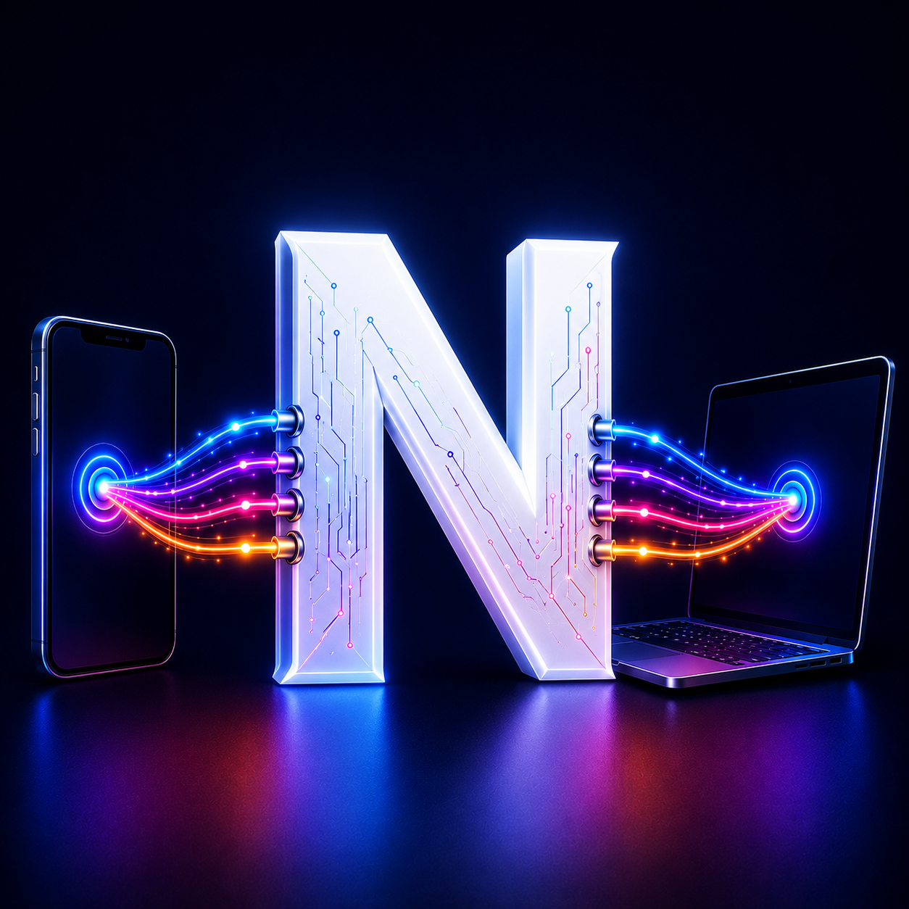
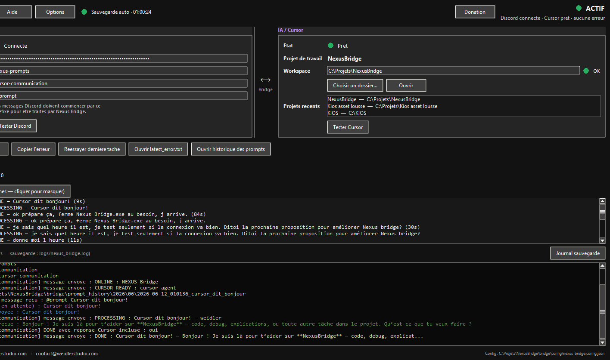

Envoyez vos demandes de n'importe où
Rédigez un prompt directement depuis Discord, où que vous soyez. Vous n'avez plus besoin d'être devant votre ordinateur pour lancer une tâche.
Contrôlez Cursor à distance, directement depuis Discord.
Nexus Bridge crée une connexion bidirectionnelle entre Discord et Cursor.
Envoyez un prompt depuis votre téléphone et laissez Cursor exécuter le travail sur votre ordinateur. Suivez ensuite l'avancement en temps réel et recevez automatiquement les réponses, les erreurs ou les confirmations directement dans Discord.
Vous pouvez ainsi lancer des tâches, surveiller leur progression et récupérer les résultats sans avoir à rester devant votre ordinateur.
Une véritable passerelle entre votre téléphone et votre environnement de développement.
Dézippez le fichier, puis double-cliquez sur NexusBridge.exe. Un guide de démarrage est intégré dans l'application.


Rédigez un prompt directement depuis Discord, où que vous soyez. Vous n'avez plus besoin d'être devant votre ordinateur pour lancer une tâche.
Nexus Bridge transmet automatiquement votre demande à Cursor, qui exécute le travail directement sur votre environnement de développement.
Recevez directement dans Discord l'état de vos demandes : en cours, terminé ou en erreur, avec les informations utiles.
Nexus Bridge transforme Discord en passerelle entre votre téléphone et votre environnement de développement. Envoyez une demande, laissez votre machine travailler et recevez le résultat où que vous soyez.
Continuez à utiliser Cursor même lorsque vous êtes loin de votre ordinateur. Votre téléphone devient une véritable télécommande de votre environnement de développement.
Lancez des corrections, des générations de code ou des analyses sans interrompre ce que vous faites. Nexus Bridge s'occupe automatiquement de la communication.
Retrouvez toutes vos demandes, leurs réponses et leur progression au même endroit pour suivre facilement vos projets.
Moins d'allers-retours devant le PC. Lancez une tâche, poursuivez votre journée et récupérez automatiquement le résultat dès qu'il est prêt.